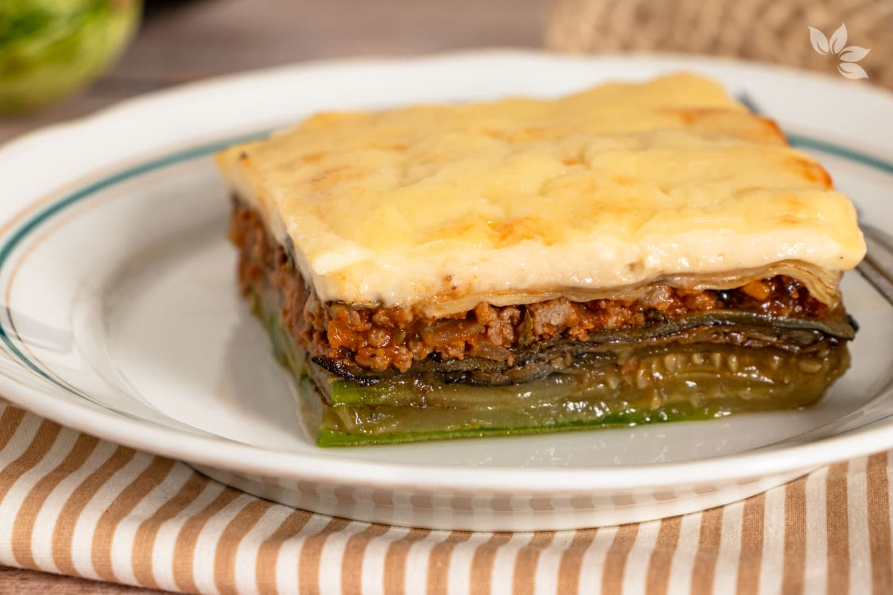
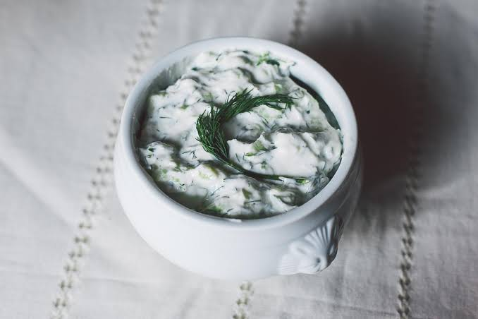
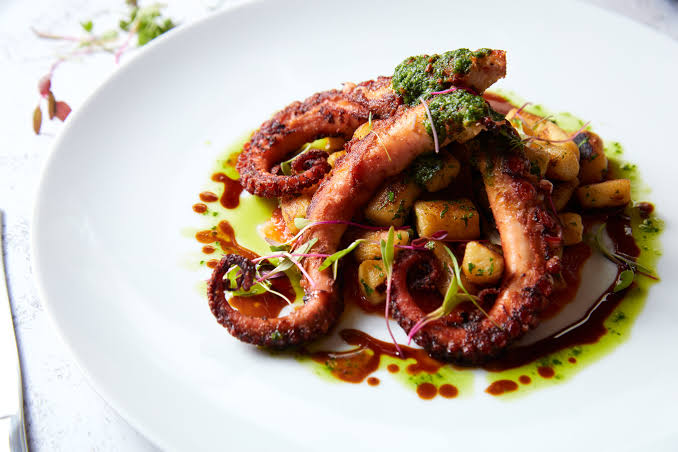
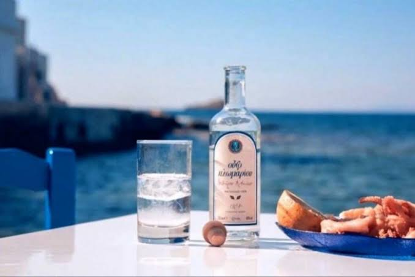

Prato assado
Moussaka
Camadas de berinjela, carne moída temperada e molho bechamel, gratinadas no forno.
A base da culinária grega são os produtos da terra e do mar: azeitonas, tomate, berinjela, queijos, peixes e carnes grelhadas. Cada região tem suas especialidades, mas a ideia é sempre a mesma: pratos para compartilhar.
Seis pratos que você vai encontrar em quase qualquer taverna.

Camadas de berinjela, carne moída temperada e molho bechamel, gratinadas no forno.
.jpg)
Espetinhos de carne grelhada, ou carne fatiada no pão pita com tomate, cebola e molho de iogurte.

Tomate, pepino, cebola roxa, azeitonas e uma fatia generosa de feta, tudo com azeite e orégano.

Iogurte com pepino, alho e azeite. Refrescante, acompanha carnes e pães.

Clássico das ilhas, servido com limão e azeite, geralmente de frente para o mar.

Torta de massa fina e crocante recheada de espinafre e queijo feta.

A baklava, feita de massa folhada, nozes e calda de mel, é a sobremesa mais conhecida. Outra boa pedida é o iogurte grego com mel e nozes, simples e cremoso.
O loukoumades, bolinhos fritos banhados em mel, também faz sucesso entre os visitantes.

O ouzo é um destilado com aroma de anis, normalmente tomado com água e acompanhado de petiscos. Os vinhos de Santorini, produzidos em solo vulcânico, são muito apreciados.
Já o café grego é preparado fervido, em copo pequeno, e degustado devagar.
Restaurante familiar, de cardápio caseiro e ambiente descontraído.
Especializada em carnes grelhadas, como souvlaki e costeletas.
Casa de ouzo com pratinhos pequenos para dividir.
Boa opção para café da manhã, tortas e doces com mel.